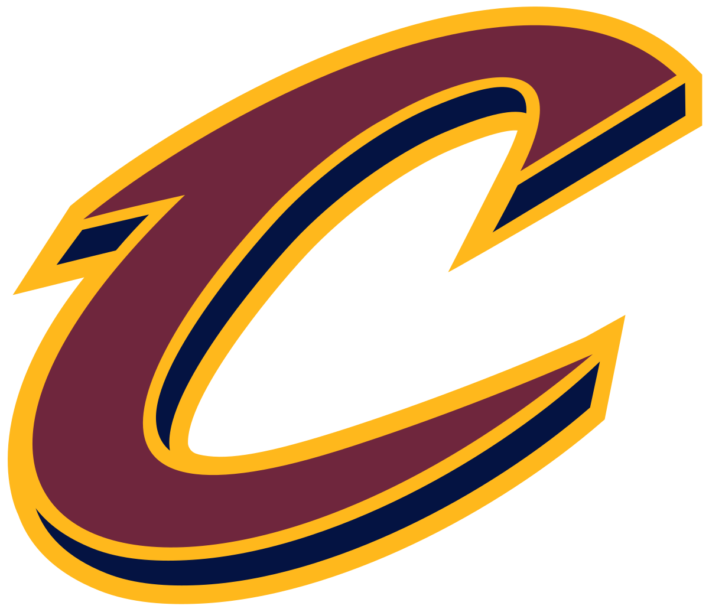

Milwaukee Bucks
O Milwaukee Bucks é um time de basquete profissional americano sediado em Milwaukee. Os Bucks competem na National Basketball Association (NBA) como membro da Divisão Central da Conferência Leste.

Atlanta Hawks
O Atlanta Hawks é um time americano de basquete profissional com sede em Atlanta. Os Hawks competem na National Basketball Association (NBA) como membro da Divisão Sudeste da Conferência Leste. A equipe joga seus jogos em casa no State Farm Arena.

Phoenix Suns
Phoenix Suns é uma equipe de basquete da National Basketball Association sediada em Phoenix, Arizona. Sua arena se chama Talking Stick Resort Arena. A equipe foi fundada em 1968 e nunca conseguiu um campeonato da liga, chegando a vice-campeonatos em 1976 e 1993.

Cleveland Cavaliers
O Cleveland Cavaliers, conhecido como Cavs, é uma equipe americana de basquete profissional sediada em Cleveland, Ohio. Os Cavs competem na National Basketball Association (NBA) como membro da Divisão Central da Conferência Leste.
